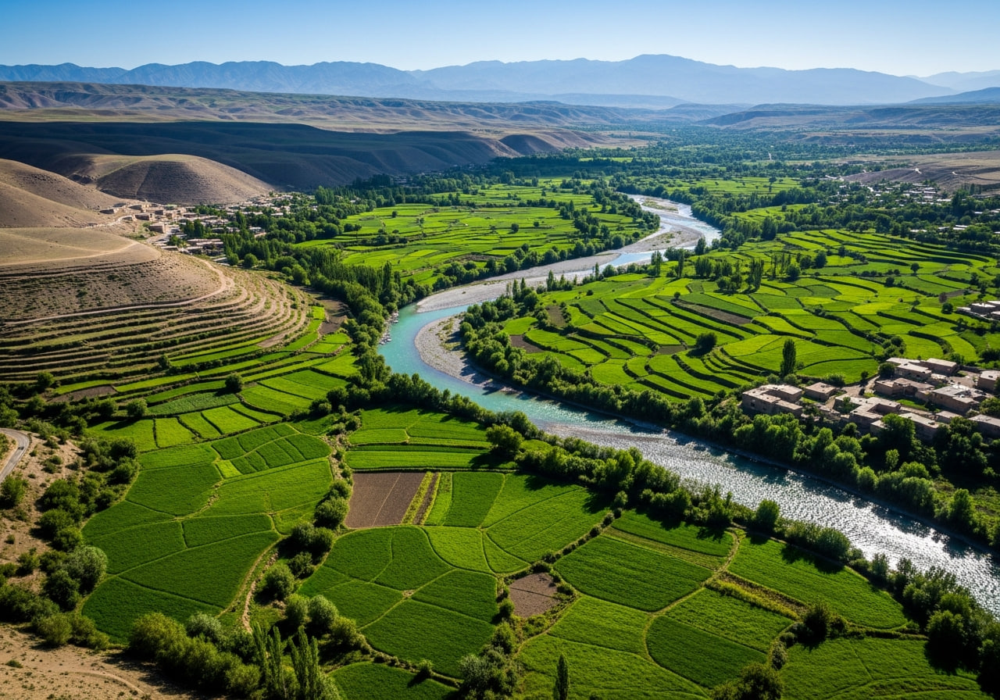

Qaisar Valley
Qaisar Valley is renowned for its breathtaking landscapes and fertile agricultural fields. The valley offers visitors a glimpse into traditional Afghan farming life, surrounded by rolling hills and pristine natural beauty that changes magnificently with each season.